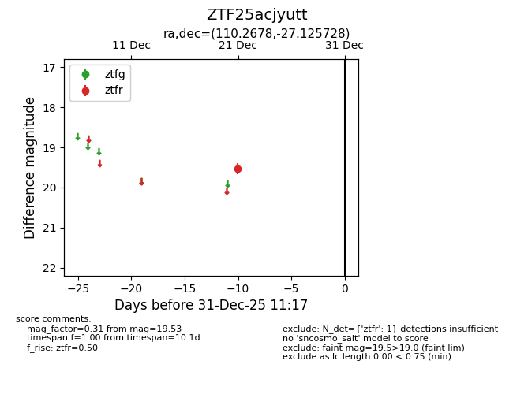
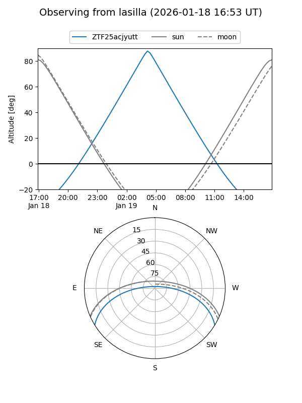
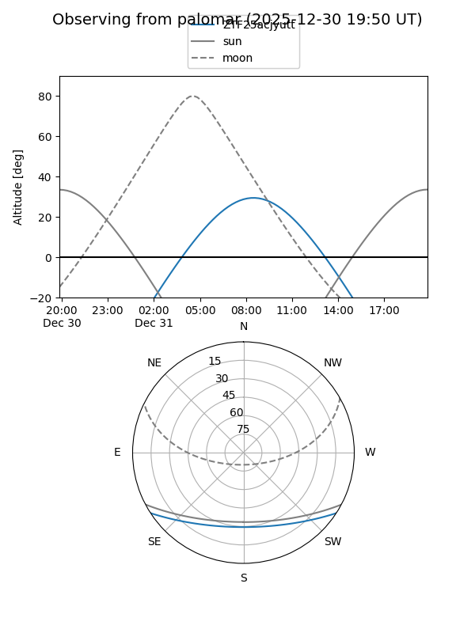

ZTF25acjyutt
Target ZTF25acjyutt at 2025-12-31 18:00
Aliases and brokers:
FINK: link
Lasair: link
ALeRCE: link
alt names
ZTF25acjyutt (ztf,fink_ztf)
Coordinates:
equatorial (ra, dec) = 110.2678,-27.12573
equatorial (HMS+DMS) = 07:21:04.27,-27:07:32.62
galactic (l, b) = (240.3640,-6.07157)
Flags:
Photometry:
last ztfr=19.53
1 ztfr detections
Lightcurve

Visibility


Additional plots